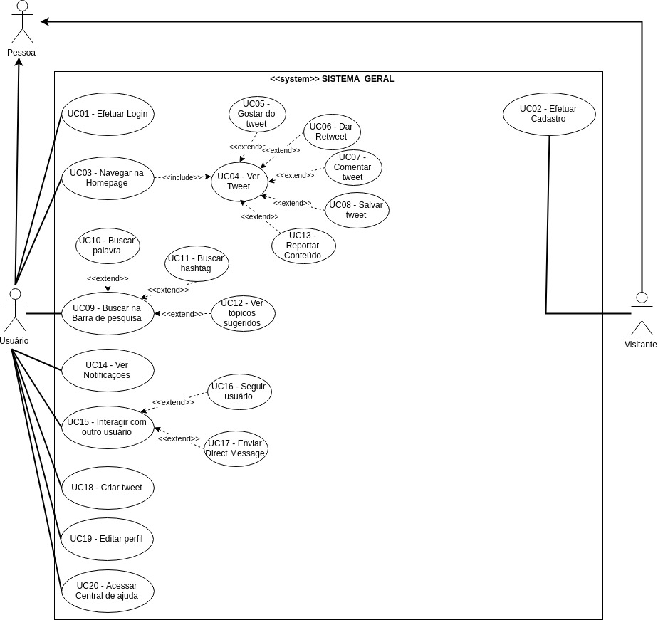

Caso de Uso: Sistema Geral
Diagrama
Autore(s): Lorrany Azevedo e Aline Laureano. Versão: 0.2 (última versão)

Autore(s): Lorrany Azevedo e Aline Laureano. Versão: 0.1
Especificações
UC01 - Efetuar Login
Autore(s): Aline Laureano. Versão: 0.1
| Descrição | É a funcionalidade que realiza o login no Twitter. |
| Ator(es) | Usuário. |
| Pré-Condições | O usuário deve estar cadastrado no Twitter.O usuário deve ter conexão com a Internet. |
| Pós-Condições | O usuário terá o seu login efetuado na aplicação.O usuário terá acesso a todas as funcionalidades em que ele tem permissão de uso na aplicação. |
| Fluxo Principal | [FP01] Fluxo iniciado quando o usuário deseja efetuar o login no Twitter:1. O usuário clica em “Entrar”;2. O usuário digita o seu e-mail;3. O usuário digita a sua senha de acesso à sua conta;4. O usuário é redirecionado para a página inicial da aplicação com o login já efetuado. |
| Fluxo(s) Alternativos | [FA01] No passo 3 do [FP01], caso o usuário esqueça a sua senha ele deve:1. Clicar no link “Esqueceu sua senha?”;2. Digitar o e-mail cadastrado na sua conta do Twitter;3. Clicar em Buscar;4. Escolher se o link de redefinição de senha será enviado para o seu celular ou para o seu e-mail;5. Acessar o link de redefinição de senha;6. Digitar a nova senha de acesso à sua conta no Twitter;7. Digitar novamente a nova senha;8. Clicar no botão “Confirmar”;9. O usuário é redirecionado para a página inicial da aplicação com o login efetuado com a sua nova senha. |
| Fluxo(s) de exceção | [FE01] Falha de conexão com a internet:No passo 2 do [FP01] ocorre uma falha de conexão com a Internet. |
UC02 - Efetuar Cadastro
Autore(s): Aline Laureano. Versão: 0.1
| Descrição | Funcionalidade responsável por cadastrar novos usuários na aplicação. |
| Ator(es) | Visitante e Usuário. |
| Pré-Condições | O Visitante deve ter conexão com a internet. |
| Pós-Condições | O Visitante terá uma nova conta cadastrada no Twitter.O Visitante vai se tornar um novo Usuário da aplicação. |
| Fluxo Principal | [FP01] Fluxo iniciado quando um Visitante deseja se cadastrar no Twitter:1. O Visitante clica em “Inscrever-se”;2. O Visitante digita o seu nome e o seu número de celular;3. O Visitante clica em “Avançar”;4. O Visitante seleciona as opções para personalizar a experiência dele com o Twitter;5. O Visitante clica em “Avançar” novamente;6. O Visitante confirma os seus dados e clica em “Inscrever-se”;7. O Visitante recebe um código de verificação no seu celular;8. O Visitante digita o código de verificação na página de cadastro do Twitter;9. O Visitante digita o seu nome de usuário do Twitter;10. O Visitante é redirecionado como Usuário para uma a sua conta cadastrada no Twitter. |
| Fluxo(s) Alternativos | - |
| Fluxo(s) de exceção | [FE01] Falha de conexão com a internet:No passo 1 do [FP01] ocorre uma falha de conexão com a Internet. |
UC03 - Navegar na Homepage
Autore(s): Aline Laureano. Versão: 0.1
| Descrição | Funcionalidade que permite ao usuário interagir com a Homepage do Twitter. |
| Ator(es) | Usuário. |
| Pré-Condições | O usuário deve estar cadastrado no Twitter.O usuário deve ter conexão com a Internet.O usuário deve ter o login efetuado na aplicação. |
| Pós-Condições | O usuário terá acesso a todas as informações disponibilizadas na Homepage do Twitter. |
| Fluxo Principal | [FP01] Fluxo iniciado quando o usuário deseja interagir com a Homepage do Twitter:1. O usuário visualiza a Homepage do Twitter;2. O usuário percorre a Homepage para visualizar as publicações dos usuários que ele segue. |
| Fluxo(s) Alternativos | - |
| Fluxo(s) de exceção | [FE01] Falha de conexão com a internet:No passo 1 do [FP01] ocorre uma falha de conexão com a Internet. |
UC04 - Ver Tweet
Autore(s): Aline Laureano. Versão: 0.1
| Descrição | Funcionalidade que permite o usuário visualizar para interagir com um tweet. |
| Ator(es) | Usuário. |
| Pré-Condições | O usuário deve estar cadastrado no Twitter.O usuário deve ter conexão com a Internet.O usuário deve ter o login efetuado na aplicação. |
| Pós-Condições | O usuário poderá visualizar e interagir com um tweet. |
| Fluxo Principal | [FP01] Fluxo iniciado quando o usuário deseja visualizar tweets:1. O usuário navega pela Homepage - [UC03];2. O usuário visualiza e pode interagir com os tweets publicados. |
| Fluxo(s) Alternativos | [FA01] Ver tweets do perfil de outro usuário:No passo 1, ao invés do usuário navegar pela Homepage ele vai:1. Acessar o perfil de outro usuário;2. Navegar pela página de perfil do outro usuário;3. Visualizar e interagir com os tweets publicados pelo outro usuário. |
| Fluxo(s) de exceção | [FE01] Falha de conexão com a internet:No passo 1 do [FP01] ocorre uma falha de conexão com a Internet. |
UC05 - Gostar do Tweet
Autore(s): Aline Laureano. Versão: 0.1
| Descrição | Funcionalidade que permite um usuário gostar de um tweet. |
| Ator(es) | Usuário. |
| Pré-Condições | O usuário deve estar cadastrado no Twitter.O usuário deve ter conexão com a Internet.O usuário deve ter o login efetuado na aplicação.O usuário deve estar visualizando o tweet que ele deseja gostar. |
| Pós-Condições | O usuário terá o tweet marcado como gostado.O tweet será adicionado para a lista de tweets gostados do usuário. |
| Fluxo Principal | [FP01] Fluxo iniciado quando um usuário deseja gostar de um tweet:1. O usuário visualiza o conteúdo de um tweet;2. O usuário clica no símbolo de coração localizado próximo ao tweet visualizado;3. O usuário visualiza o tweet marcado como gostado com o símbolo passando a se mostrar preenchido e com o número de “gostei” ao lado do símbolo do coração sendo incrementado em um. |
| Fluxo(s) Alternativos | - |
| Fluxo(s) de exceção | [FE01] Falha de conexão com a internet:No passo 2 do [FP01] ocorre uma falha de conexão com a Internet. |
UC06 - Dar Retweet
Autore(s): Aline Laureano. Versão: 0.1
| Descrição | Funcionalidade que permite que um usuário dê um Retweet um tweet publicado por outro usuário. |
| Ator(es) | Usuário. |
| Pré-Condições | O usuário deve estar cadastrado no Twitter.O usuário deve ter conexão com a Internet.O usuário deve ter o login efetuado na aplicação.O usuário deve estar visualizando o tweet que ele deseja dar um Retweet. |
| Pós-Condições | O usuário terá o tweet de outro usuário publicado na sua conta do Twitter. |
| Fluxo Principal | [FP01] Fluxo iniciado quando um usuário deseja dar um Retweet em um tweet de outro usuário:1. O usuário visualiza o conteúdo de um tweet;2. O usuário clica no símbolo de dar Retweet localizado próximo ao tweet visualizado;3. O usuário tem o tweet publicado na conta como um Retweet. |
| Fluxo(s) Alternativos | - |
| Fluxo(s) de exceção | [FE01] Falha de conexão com a internet:No passo 2 do [FP01] ocorre uma falha de conexão com a Internet. |
UC07 - Comentar tweet
Autore(s): Aline Laureano. Versão: 0.1
| Descrição | Funcionalidade que permite que um usuário faça um comentário a um tweet. |
| Ator(es) | Usuário. |
| Pré-Condições | O usuário deve estar cadastrado no Twitter.O usuário deve ter conexão com a Internet.O usuário deve ter o login efetuado na aplicação.O usuário deve estar visualizando o tweet que ele deseja comentar. |
| Pós-Condições | O usuário terá o seu comentário publicado no tweet. |
| Fluxo Principal | [FP01] Fluxo iniciado quando um usuário deseja comentar um tweet:1. O usuário visualiza o conteúdo de um tweet;2. O usuário clica no símbolo de comentar localizado próximo ao tweet visualizado;3. O usuário digita o comentário que ele deseja realizar;4. O usuário clica no botão “Comentar”;5. O usuário tem o seu comentário publicado no tweet em questão. |
| Fluxo(s) Alternativos | - |
| Fluxo(s) de exceção | [FE01] Falha de conexão com a internet:No passo 2 do [FP01] ocorre uma falha de conexão com a Internet. |
UC08 - Salvar tweet
Autore(s): Aline Laureano. Versão: 0.1
| Descrição | Funcionalidade que permite que um usuário salve um tweet. |
| Ator(es) | Usuário. |
| Pré-Condições | O usuário deve estar cadastrado no Twitter.O usuário deve ter conexão com a Internet.O usuário deve ter o login efetuado na aplicação.O usuário deve estar visualizando o tweet que ele deseja salvar. |
| Pós-Condições | O usuário terá o tweet salvo na sua lista de tweets salvos. |
| Fluxo Principal | [FP01] Fluxo iniciado quando um usuário deseja salvar um tweet:1. O usuário visualiza o conteúdo de um tweet;2. O usuário clica no símbolo de salvar localizado próximo ao tweet visualizado;3. O tweet é salvo na lista de tweets salvos do usuários. |
| Fluxo(s) Alternativos | - |
| Fluxo(s) de exceção | [FE01] Falha de conexão com a internet:No passo 2 do [FP01] ocorre uma falha de conexão com a Internet. |
UC09 - Buscar na Barra de pesquisa
Autore(s): Aline Laureano. Versão: 0.1
| Descrição | Funcionalidade que permite ao usuário realizar pesquisas no Twitter. |
| Ator(es) | Usuário. |
| Pré-Condições | O usuário deve estar cadastrado no Twitter.O usuário deve ter conexão com a Internet.O usuário deve ter o login efetuado na aplicação. |
| Pós-Condições | O usuário poderá visualizar os resultados da pesquisa que ele fez. |
| Fluxo Principal | [FP01] Fluxo iniciado quando um usuário deseja realizar uma pesquisa no Twitter:1. O usuário clica na barra de pesquisa do Twitter;2. O usuário digita o que ele quer pesquisar;3. O usuário pressiona a tecla enter ou clica no símbolo de pesquisar;4. O usuário é redirecionado para uma página com o(s) resultado(s) da pesquisa. |
| Fluxo(s) Alternativos | - |
| Fluxo(s) de exceção | [FE01] Falha de conexão com a internet:No passo 3 do [FP01] ocorre uma falha de conexão com a Internet.[FE02] Nenhum resultado encontrado:No passo 4 do [FP01], é mostrado, no local destinado aos resultados da pesquisa, a mensagem de que nenhum resultado foi encontrado. |
UC10 - Buscar Palavra
Autore(s): Aline Laureano. Versão: 0.1
| Descrição | Funcionalidade que permite ao usuário pesquisar uma palavra no Twitter. |
| Ator(es) | Usuário. |
| Pré-Condições | O usuário deve estar cadastrado no Twitter.O usuário deve ter conexão com a Internet.O usuário deve ter o login efetuado na aplicação. |
| Pós-Condições | O usuário poderá visualizar os resultados da pesquisa que ele fez. |
| Fluxo Principal | [FP01] Fluxo iniciado quando um usuário deseja pesquisar uma palavra no Twitter:1. O usuário clica na barra de pesquisa do Twitter;2. O usuário digita a palavra que ele quer pesquisar;3. O usuário pressiona a tecla enter ou clica no símbolo de pesquisar;4. O usuário é redirecionado para uma página com o(s) resultado(s) da pesquisa. |
| Fluxo(s) Alternativos | - |
| Fluxo(s) de exceção | [FE01] Falha de conexão com a internet:No passo 3 do [FP01] ocorre uma falha de conexão com a Internet.[FE02] Nenhum resultado encontrado:No passo 4 do [FP01], é mostrado, no local destinado aos resultados da pesquisa, a mensagem de que nenhum resultado foi encontrado. |
UC11 - Buscar Hashtags
Autore(s): Lorrany Azevedo. Versão: 0.1
| Descrição | Funcionalidade responsável buscar uma hashtag na aplicação |
| Ator(es) | Usuário |
| Pré-Condições | * O usuário precisa ter acesso a internet * O usuário precisa estar logado |
| Pós-Condições | * O usuário encontrará tweets que usaram aquela hashtag * O usuário poderá ver se a hashtag está nos assuntos mais comentados do twitter |
| Fluxo Principal | [FP11] Este fluxo se inicia quando o usuário deseja buscar uma hashtag na aplicação 1. Usuário faz login na plataforma. 2. Usuário clica no botão de buscar. 3. Usuário digita a hashtag que ele deseja buscar. 4. Usuário vê tweets em destaque que utilizam aquela hashtag |
| Fluxo(s) Alternativos | [FA11] Possibilidade de ver tweets além dos destaques O Usuário pode escolher ver os tweets mais recentes que usaram aquela hashtag, ver pessoas, fotos e vídeos que usaram a hashtag. |
| Fluxo(s) de exceção | [FE11] Notificação de hashtag inexistente Caso a hashtag buscada pelo usuário não exista, é retornada uma mensagem dizendo que nenhum resultado foi encontrado. |
UC12 - Ver tópicos sugeridos
Autore(s): Lorrany Azevedo. Versão: 0.1
| Descrição | Funcionalidade responsável por mostrar ao usuário tópicos que possam lhe interessar |
| Ator(es) | Usuário |
| Pré-Condições | * O usuário precisa ter acesso a internet * O usuário precisa estar logado |
| Pós-Condições | * O usuário encontrará assuntos e tweets que possam lhe interessar * O usuário poderá ver os assuntos mais comentados do twitter * O usuário poderá ver notícias, esportes, diversão e entretenimento |
| Fluxo Principal | [FP12] Este fluxo se inicia quando o usuário deseja fazer alguma busca e vê os assuntos sugeridos 1. Usuário faz login na plataforma 2. Usuário clica no botão de buscar 3. Usuário se depara com as sugestões do twitter 4. Usuário vê tweets em destaque e pode escolher visualizar os tweets dos assuntos sugeridos |
| Fluxo(s) Alternativos | [FA12] Possibilidade de apenas realizar a busca Possibilidade de apenas realizar a busca |
| Fluxo(s) de exceção | [FE12] Não identificados |
UC13 - Reportar conteúdo
Autore(s): Lorrany Azevedo. Versão: 0.1
| Descrição | Funcionalidade para denunciar conteúdos que sejam ofensivos ou que violam as diretrizes do twitter |
| Ator(es) | Usuário |
| Pré-Condições | * O usuário precisa ter acesso a internet * O usuário precisa estar logado |
| Pós-Condições | * O usuário irá escolher o motivo da denúncia * O usuário poderá bloquear ou silenciar o autor do tweet |
| Fluxo Principal | [FP13] Este fluxo se inicia quando o usuário se depara com algum conteúdo nocivo e deseja denunciá-lo 1. Usuário faz login na plataforma 2. Usuário visualiza o feed 3. Usuário vê tweet ofensivo 4. Usuário justifica o motivo da denúncia 5. Usuário finaliza a denúncia |
| Fluxo(s) Alternativos | [FA13] Usuário apenas denúncia o tweet O Usuário pode escolher após a denúncia não silenciar ou bloquear o autor do tweet |
| Fluxo(s) de exceção | [FE12] Denúncia inválida Caso o Usuário faça a denúncia e o twitter decida que a publicação não fere as diretrizes do site, o usuário seŕa notificado se a publicação foi retirada ou não do ar por violar as diretrizes do twitter |
UC14 - Ver notificações
Autore(s): Lorrany Azevedo. Versão: 0.1
| Descrição | O usuário é notificado sempre que acontece alguma interação com outro usuário |
| Ator(es) | Usuário |
| Pré-Condições | * O usuário precisa ter acesso a internet * O usuário precisa estar logado * O usuário precisa seguir ou ser seguido por outros usuários |
| Pós-Condições | * O usuário verá a notificação |
| Fluxo Principal | [FP14] Este fluxo se inicia quando o usuário é notificado de alguma atividade em seu twitter 1. Usuário é notificado 2. Usuário abre a notificação |
| Fluxo(s) Alternativos | [FA14] O Usuário pode escolher como interagir com a notificação O Usuário pode escolher responder o tweet ou mensagem direta que gerou a notificação, ele pode curtir o tweet, pode retweetar ou pode apenas visualizar a notificação |
| Fluxo(s) de exceção | [FE14] Desativar notificações Caso o Usuário se sinta incomodado pelas notificações ele pode desativá-las |
UC15 - Interação com outros usuários
Autore(s): Lorrany Azevedo. Versão: 0.1
| Descrição | O usuário pode reagir a publicações de outros usuários e também pode enviar mensagens diretas |
| Ator(es) | Usuário |
| Pré-Condições | * O usuário precisa ter acesso a internet * O usuário precisa estar logado * O usuário precisa seguir ou ser seguido por outros usuários |
| Pós-Condições | * O usuário poderá interagir com outros usuários |
| Fluxo Principal | [FP15] Este fluxo se inicia quando o usuário interage com outros usuários 1. Usuário cria conta 2. Usuário sege outros usuários 3. Usuário interage com outros através de comentários, curtidas, retweets, comentários em publicações ou mensagens diretas |
| Fluxo(s) Alternativos | [FA15] O Usuário pode escolher apenas visualizar as publicações |
| Fluxo(s) de exceção | [FE15] Limitar interações Caso o Usuário queira ele pode trancar o seu perfil para que apenas seus seguidores consigam visualizar suas publicações e interagir com elas, ele pode também trancar a caixa de mensagens |
UC16 - Seguir outros usuários
Autore(s): Lorrany Azevedo. Versão: 0.1
| Descrição | O usuário pode seguir outros usuários para poder visualizar seus tweets sempre que forem postados e poder interagir com o mesmo |
| Ator(es) | Usuário |
| Pré-Condições | * O usuário precisa ter acesso a internet * O usuário precisa estar logado |
| Pós-Condições | * O usuário poderá interagir com outros usuários |
| Fluxo Principal | [FP16] Este fluxo se inicia quando o usuário quer seguir outra pessoa 1-Usuário faz login 2-Usuário visualiza o feed com tweets de outros usuários 3-Usuário clica no botão de pesquisar 4-Usuário busca pelo nome de outro usuário 5-Usuário começa a seguir este usuário. clicando no botão “seguir” |
| Fluxo(s) Alternativos | [FA16] Seguir pessoas sugeridas O usuário pode seguir as pessoas recomendadas pelo twitter. |
| Fluxo(s) de exceção | [FE16] Não usuário pode optar por não seguir ninguém |
UC17 - Enviar mensagens diretas
Autore(s): Lorrany Azevedo. Versão: 0.1
| Descrição | O usuário poderá ter conversas privadas com outros usuários que são seus seguidores ou tem a caixa de DM's aberta |
| Ator(es) | Usuário |
| Pré-Condições | * O usuário precisa ter acesso a internet * O usuário precisa estar logado |
| Pós-Condições | * O usuário poderá ter conversas privadas com outros usuários |
| Fluxo Principal | [FP17] Este fluxo se inicia quando o usuário quer ter uma conversa através de uma espécie de chat 1-Usuário faz login 2- Usuário clica na caixa de mensagens 3- Usuário busca pelo nome de outro usuário 4-Usuário escreve mensagem 5-Usuário clica em enviar mensagem |
| Fluxo(s) Alternativos | [FA17] O usuário pode habilitar a caixa de mensagem para receber mensagem de qualquer usuário do twitter |
| Fluxo(s) de exceção | [FE17] O usuário pode trancar a sua caixa de mensagens |
UC18 - Criar tweets
Autore(s): Lorrany Azevedo. Versão: 0.1
| Descrição | O usuário poderá postar frases, fotos, vídeos ou enquetes em seu perfil |
| Ator(es) | Usuário |
| Pré-Condições | * O usuário precisa ter acesso a internet * O usuário precisa estar logado |
| Pós-Condições | * As postagens do usuário serão visiveis para os seus seguidores e para outras pessoas caso seu perfil seja aberto |
| Fluxo Principal | [FP18] Este fluxo se inicia quando o usuário deseja compartilhar algum momento ou informação em seu perfil 1-Usuário faz login 2- Usuário clica na caixa de publicações 3- Usuário escreve o que irá publicar 4-Usuário clica no botão "tweetar" |
| Fluxo(s) Alternativos | [FA18] O usuário pode publicar em resposta a tweets de outras pessoas |
| Fluxo(s) de exceção | [FE18] Não identificado |
UC19 - Editar perfil
Autore(s): Lorrany Azevedo. Versão: 0.1
| Descrição | O usuário poderá editar a aparência e as informações do seu perfil de acordo com suas preferências |
| Ator(es) | Usuário |
| Pré-Condições | * O usuário precisa ter acesso a internet * O usuário precisa estar logado |
| Pós-Condições | * O perfil irá ter a aparência desejada pela usuário |
| Fluxo Principal | [FP19] Este fluxo se inicia quando o usuário deseja mudar a aparência, segurança ou informações em seu perfil 1-Usuário faz login 2- Usuário clica em "Perfil" 3- Usuário clica em "editar perfil" 4-Usuário escolhe qual das alterações disponiveis ele fará. 5- Usuário clica em "Salvar" e salva as alterações feitas. |
| Fluxo(s) Alternativos | [FA19] O usuário pode escolher o que modificar O usuário pode escolher editar sua foto de perfil, localização, data de nascimento, biográfia e nome. |
| Fluxo(s) de exceção | [FE19] O usuário pode não fazer nenhuma alteração em seu perfil apenas clicando em "salvar" |
UC20 - Acessar central de ajuda
Autore(s): Lorrany Azevedo. Versão: 0.1
| Descrição | O usuário poderá procurar por ajudar e instruções de como o site funciona e deve ser utilizado |
| Ator(es) | Usuário |
| Pré-Condições | * O usuário precisa ter acesso a internet * O usuário precisa estar logado |
| Pós-Condições | * O usuário irá sanar suas dúvidas a respeito do funcionamento do app/site |
| Fluxo Principal | [FP20] Este fluxo se inicia quando o usuário tem alguma dúvida a respeito do site 1-Usuário faz login 2- Usuário clica em "Central de Ajuda" 3- Usuário busca pela sua dúvida 4- Usuário é redirecionado para a página que sana suas dúvidas |
| Fluxo(s) Alternativos | [FA20] O usuário pode escolher entre uma das opções de ajuda que o twitter disponibiliza O usuário pode escolher entre algumas opções de ajuda que o twitter disponibiliza entre elas tem a opção de "Como usar o Twitter" entre outras |
| Fluxo(s) de exceção | [FE20] O usuário faz busca inexistente Caso o usuário busque por uma dúvida que não está disponível na central de ajuda o twitter retorna uma mensagem de "Nenhum resultado encontrado" |
Versionamento de edições desta página
| Data | Autor | Descrição | Versão |
|---|---|---|---|
| 24/09/2019 | Aline Laureano, Lorrany Azevedo | Criação da página e inserção do Caso de uso SISTEMA GERAL. | 0.1 |
| 27/09/2019 | Lorrany Azevedo | Especificação dos requisitos UC11 até o UC20 | 0.2 |
| 30/09/2019 | Aline Laureano | Especificação dos requisitos UC01 até o UC10 & adição dos autores e das versões das especificações. | 0.3 |
| 18/10/2019 | Aline Laureano | Adição da versão 0.2 do diagrama de Caso de uso SISTEMA GERAL. | 0.4 |